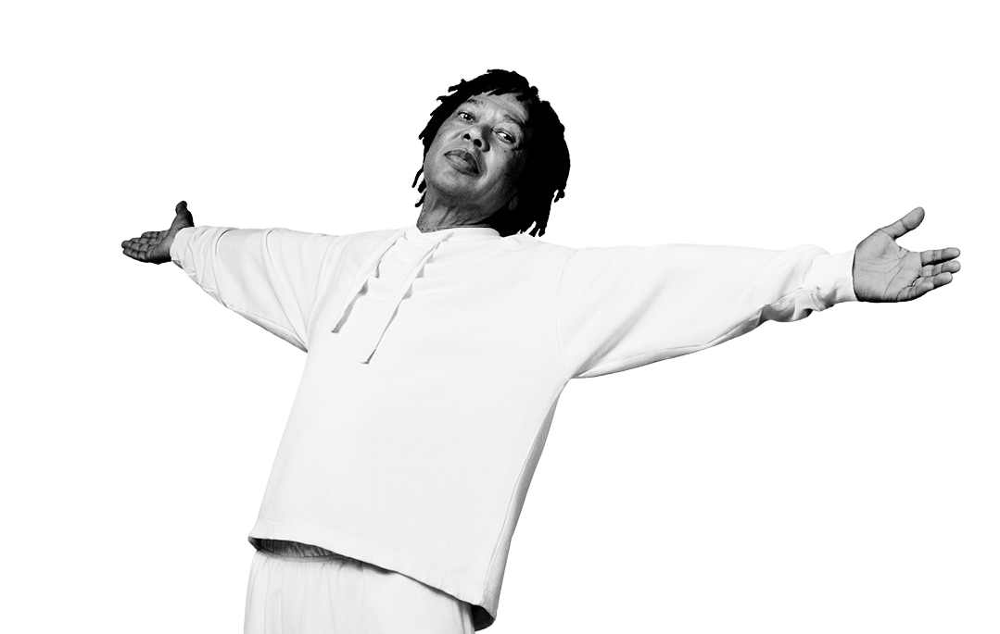

Djavan cativa os brasileiros com suas letras apaixonantes e melodias que tocam na alma. Sua música mais aclamada é Oceano: "...é uma obra que mergulha nas profundezas do amor e da paixão, explorando a intensidade e a complexidade dos sentimentos que acompanham um relacionamento amoroso. A letra da música utiliza metáforas náuticas para descrever a experiência de estar apaixonado, sugerindo uma viagem pelo mar agitado das emoções."
Sobre o artista
Djavan Caetano Viana é um cantor, compositor, arranjador, produtor musical, empresário, violonista e ex-futebolista brasileiro. Nascimento: 27 de janeiro de 1949 (idade 76 anos), Maceió, Alagoas. "Minha religião é Deus. Me criei sob o manto da religião católica, mas admiro outras religiões como a umbanda. Religião é um conceito de vida, a sua religião é o seu transporte para você atingir sua fé. Eu não preciso de religião, na verdade, para atingir minha fé, eu sou um homem de fé, sempre tive. Eu tenho fé em mim, nas coisas que eu faço, fé no trabalho..." - Djavan para uma entrevista da El país
